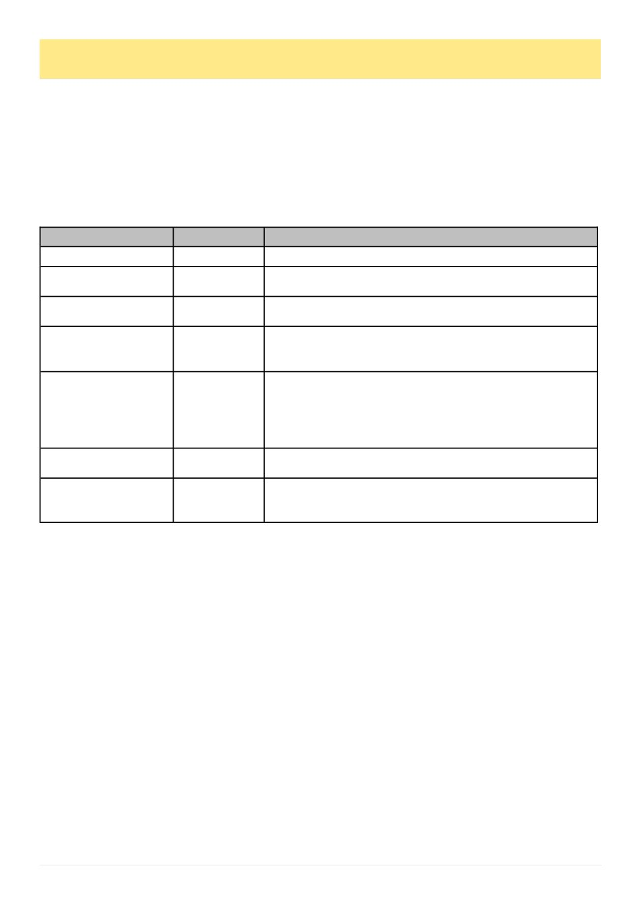

30
Australian Bee Journal
The Hidden Barrier To Varroa Control, cont’d
rists Association), CAP Products Australia and finally in frustration the APVMA (Australian Pesticides and Veteri-
nary Medicines Authority), and I‘ve encouraged other clubs to do the same. I note both South Gippsland, and the
Mansfield & District Beekeepers raised the same concerns.
What we’ve heard back
Agriculture Victoria acknowledged the issue and provided clarity around which products can be stored after
opening and which cannot. They recognise the challenge and are doing what they can within their remit. They also
suggested that we raise our concerns with the VAA so that the request is backed by industry, making it clear to sup-
pliers that this is a statewide issue rather than an isolated one.
** Please note that best practice for storage of any veterinary chemicals is to keep them locked up and in original
packaging inside an air-tight container unless the label/permit states otherwise. I have highlighted some examples
for you above.
I also note that the Agriculture Victoria table should ideally include the Aluen CAP permit instruction ―Discard
unused strips 24 hours after first opening the pouch.‖ which is a critical part of PER95790 and central to the chal-
lenges hobbyists are facing.
The VAA discussed the matter at their board meeting and agreed the issue is real but noted that emergency permit
conditions limit what can be changed in the short term. Their suggestion was to explore a ―buddy system‖ like Ben-
digo‘s. And then came a detailed and constructive response from Aluen CAP (CAP Products Australia), which add-
ed important context.
Aluen CAP’s response, and why it matters
Aluen CAP were very open in acknowledging the problem. They made it clear that:
They recognise the 60-strip pack is challenging for hobbyists. They cannot change the pack size or discard rule
while the product is under the current emergency permit as these conditions are set by the APVMA.
A smaller 24 strip pack does exist overseas but introducing it in Australia would require a new application path-
way, not a simple amendment.
They have already invested heavily in the emergency permit and full registration process and cannot fund multi-
ple registration pathways simultaneously.
The APVMA requires Australian data, not overseas studies, to support label changes — meaning any amendment
requires new local evidence, time, and cost.
Once full registration is granted, they will be in a much better position to seek amendments, including smaller
pack sizes and reviewing the 24-hour discard requirement.
Importantly, they also clarified that while strips cannot be sold individually, beekeepers can coordinate treatment
together and use a full pack within the 24-hour window. It‘s not perfect, but it is compliant under the current permit.
(Continued from page 29)
(Continued on page 31)
Trade Name
Active Chemical
Storage instructions – From Labels/Permits
Bayvarol Strips
Flumethrin
Store at 30°C (room temperature).
Apistan
Tau-fluvalinate
Store locked up. Store below 25°C, out of direct sunlight and away
from other pesticides
Apitraz
Amitraz
Do not store above 25°C. Protect from light. Use immediately
after opening. Do not use if you see signs of deterioration.
Apivar
Amitraz
Store below 30°C (room temperature). Store in the original closed
package. Protect from light. Use the contents within 24 hours of
opening. Discard any unused portion.
Formic pro
Formic Acid
Keep locked up. Do not store above 25°C (air conditioning). Only
store in original container indoors, out of direct sunlight, in a dry
and well-ventilated area, away from sulphuric acid, oxidizing
agents, and sources of ignition. Avoid heat, sparks, and open
flames. Keep containers tightly closed.
Apiguard gel for bee
hives
Thymol
Store below 25 °C (air conditioning) in a cool, dry place, protect
from light.
Aluen cap slow-release
oxalic acid strips for bee
hives
Oxalic Acid
Store in the closed, original container below 30 °C (room tempera
ture). Protect from light.